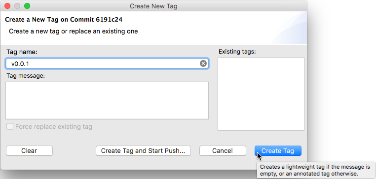
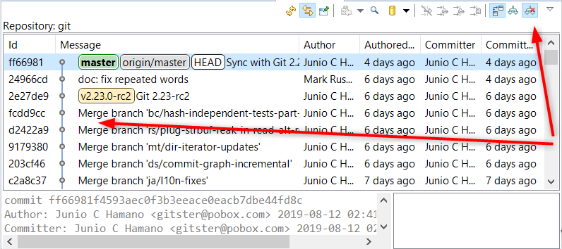
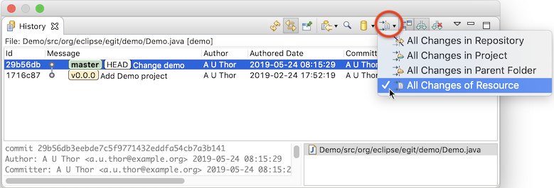
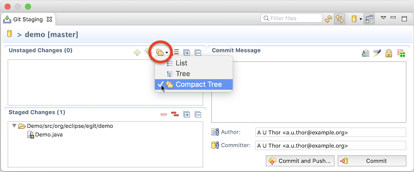

| EGit 5.5 New and Noteworthy | ||
|---|---|---|
|
|
||
| Contributors | ||
With EGit 5.5, you can create lightweight tags. Just leave the message field in the "Create Tag" dialog empty:

A lightweight tag doesn't store any author information (who created the tag) or message, and it cannot be signed. It is really just a plain name for a commit. An annotated commit, on the other hand, additionally stores a message, and also the author of the tag.
If an existing tag is selected and the "Force replace existing tag" option is checked, the dialog can also be used to move a tag (make it refer to a different commit than before), or to change an annotated tag into a lightweight tag (by clearing the message) or vice versa (by adding a message).
A history graph with many merges can be very hard to read. Therefore native git log has an option --first-parent, which shows only the first parent of each merge commit. This is now also available in the EGit history view.

Notice the many merge commits in the history, which all show only one parent, instead of splitting into more and more lines.
The toolbar of the history view has been made shorter:

Instead of four individual buttons for the resource filters there's now only one button with a drop-down menu. Clicking the button cycles through the filters; the button's icon changes depending on the chosen filter.
Before EGit 5.5 you had to navigate to a branch node in the repository view, in order to rename the branch. Now you can use the F2 key for renaming a branch both on the branch node or on the repository node. No need to expand all the nodes down to the branch node anymore.
EGit had an option to display the staged and unstaged files as a flat list or as a tree of folders and files since a long time already. Both can be very helpful when you want to stage only some of many changed files, either based on their name or based on their location. To make more users aware of the different presentations, the option can now be changed more easily via a dropdown menu next to the unstaged files area in the history view.

The button's icon changes depending on the selected mode.
EGit 5.5 includes lots of less noticeable improvements in the UI, plus a number of bug fixes. The complete list of new features and bug fixes is available in the release notes.
|
|
||
| Contributors |